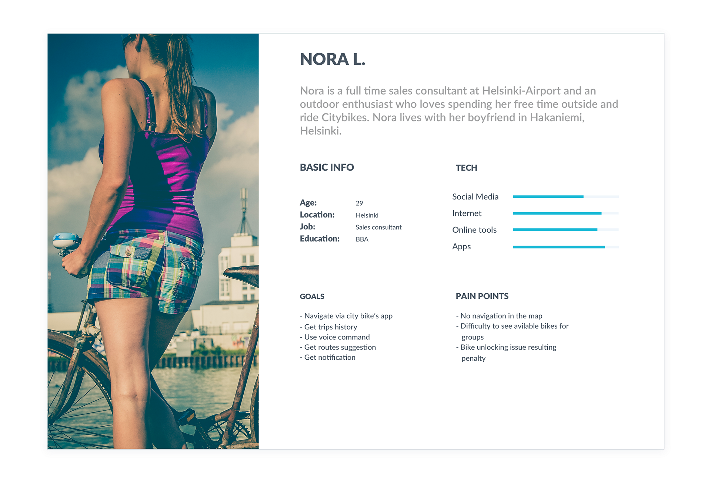
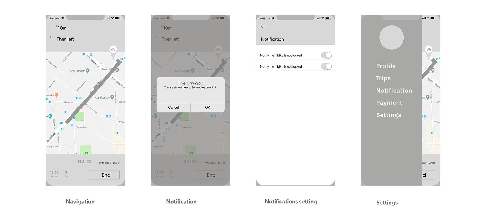

Design Process

Prototype Design
Hardware & iPhone applicaton
SmartCurtain is a prototype design project as a part of the Design in Engineering course in Aalto. We designed a prototype with a user-centric approach. This project is especially important for me because it involved hardware and software design including circuit design, Arduino installation, and programming.
Research, User Flows,Sketching, Wireframing, UI, Prototyping, User testing, circuit design, circuit installation & programming.
3 months (once a week)
Oscar Löfqvist & Bikash Sharma
This was a team project. I was responsible for sketching, wireframing, designing user flows, user testing, designing mockup, circuit installing and some programming.
Oscar was responsible for user testing, 3D modeling, Arduino programming and iPhone app development.
The project started with background research. The aim of the research was to find what is the existing problem with manual curtains and what are the available automation options. We interviewed people and gathered their views, pain points and expectation.
Following are the highlights :

Being an active user myself and hearing all this feedback from other users, I found the following major pain points.
7 of the users preferred to have recent station locations stored in the app so they don’t have to worry about remembering the addresses and it is easy to navigate with one hand while riding the bike.
Heading to any destination on a city bike hoping to find a station nearby is stressful and a huge problem. Often users have to look around and go a bit farther to return the bike.
Heading to any destination on a city bike hoping to find a station nearby is stressful and a huge problem. Often users have to look around and go a bit farther to return the bike.
3 of the users got a penalty because their bike was not locked.
9 of the users said it is difficult to ride when they have to check navigation from another app which also consumes their battery because of multiple apps running on the background.
4 of the users said city bikes should have a mobile phone mount. This way they could focus on traffic while riding.
I have received lots of opinions, comments, and suggestions from users and all the participants in the study were facing some common issues. For better understanding, I made a workflow of the current scenario.

I used the findings to construct a provisional personas, to help me understand how I can help users achieve their goal using city bike's App.
After understanding the user's pain point and their expectation from the app, I saw following opportunities that can enhance the usability of the app and solves the main problems users are facing.
My proposed Idea takes two of the main users' problems. While other opportunities look promising but the main problem most of the users are facing will be the priority. Also, from development point of view these are easier features to implement.
For better understanding, I made a workflow of the new design idea. This will give a better picture and also help developer understand on what new design will require.

After receiving all the feedback and doing the research I started brainstorming and drawing sketches in order to improve the design.
After several iterations of quick sketches, I proceeded further to create wireframes. I used Sketch App to create the wireframes. This helped me and the users to get a sample look and understand the flow between the screens. Here are the screens created.
I hope you enjoyed the new features and my prototype. I enjoyed this entire process and I think City Bikes are great. There are unlimited possiblities to make it better. These are a few I presented in a short time with limited time and resources. It would be amazing to discuss more about this and know your opinions and suggestions. Looking forward to hearing from you. Thank you so much for giving your valuable time.